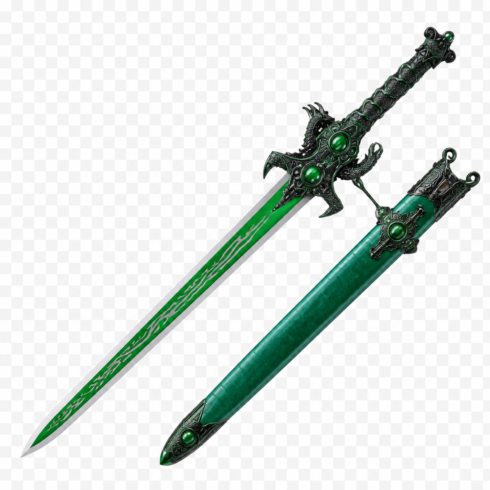

The green volume · 12 × 12 edition
Nowhere's End
A Book of Potions
What begins as a bitter plant becomes a spirit, a ritual, a myth, and a way of seeing.
Print edition · 2026
Contents
The six books
The hand moves from glass to archive, garden, bench, myth, and table. The expanded rooms follow the same architecture as the web manuscript and carry the book's developed research with them.
The Potion · Folios 04–18
Four house potions, the Green Hour, color, water, spoon, and the first visible change.
The Green Goddess · Folios 19–52
Wormwood, origins, markets, cafés, bans, revival, and the complete historical room.
The Garden · Folios 53–78
Plant identity, Monument, harvest, storage, and the herb-to-molecule chain.
The Invisible Mechanism · Folios 79–118
Louche, anethole, oil-water behavior, analytical testing, thujone, and psychoactive interpretation.
The Cultural Atmosphere · Folios 119–148
Art, literature, music, Revelation, Crowley, the Green Muse, and interpretation.
The Workbench · Folios 149–200
Formula cards, rituals, shared table, source apparatus, and return.
The green volume
Nowhere's End
A Book of Potions
What begins as a bitter plant becomes a spirit, a ritual, a myth, and a way of seeing.
A living manuscript · 12 × 12 in · 2026
Open the green hour
There is a moment before the water: the bottle is closed, the glass is clear, and the plant exists only as a promise carried by aroma. The spoon waits. The room has not yet changed.
Then water enters. The spirit loses its transparency and gains a weather. Oils gather into droplets; light breaks; bitterness becomes atmosphere. This is the first potion in the book—not a claim of escape, but a visible passage from one state to another.
Follow that passage backward into the plant and forward into the hand. The same hand will open an archive, turn a leaf in Monument soil, measure a cloud at the bench, enter the rooms of myth, and return with water and food. Along the way, the book asks what is documented, what is plausible, what is inherited as myth, and what Nowhere's End has made for itself.
The plant gives the command. The water reveals the gate. The glass records the passage.
For the edition
The book has a body.
Its folios, plates, captions, sources, and large-format specifications live together in the print manifest.
Follow the hand through the volume
A bitter plant becomes a drink, the drink becomes a ritual, the ritual becomes a myth, and the myth returns to the laboratory. The reader is not outside that sequence: each book changes what the hand knows how to notice.
Receive the potion
Begin with color, aroma, proof, spoon, water, and the first change in the glass.
Recover the plant
Leave the café for wormwood’s older uses, contested origins, markets, bans, and return.
Grow the question
Put names beside specimens, harvest dates beside plant parts, and romance beside weather.
Make the invisible legible
Read the louche, the oil, the proof, and the pharmacology as observations with limits.
Enter the rooms of meaning
Let art, literature, music, Revelation, and Crowley enlarge the symbol without disguising the archive.
Return changed
Repeat the serve, share food, keep the record, and bring the question back to ordinary life.
The object in the glass
You begin with four glasses. Absinthe is not one color, one recipe, or one story; it is a family of decisions about plants, plant parts, alcohol, water, proof, time, and the hand that pours. Verte, Bleue, Detour, and Crimson will recur as four figures while the book changes rooms around them.
First path
Verte · The Green Hour
Wormwood, anise, fennel, hyssop, and the classic cloud.
Enter the formulaSecond path
Bleue · The Clear Bloom
Blue atmosphere, dry herbs, proof, and the discipline of clarity.
Enter the formulaThird path
Detour · The Yellow Route
Lemon balm, citrus, resin, and a turn away from heavy licorice.
Enter the formulaFourth path
Crimson · The Flowering Shadow
Hibiscus, rosehip, spice, tartness, and the red finish.
Enter the formulaThe bottle at the threshold
The bottle is the first boundary. Inside it, plants have been reduced to a vocabulary of perfume, bitterness, heat, and color; outside it, they become a choice made by the person who pours. A label can name the spirit, but it cannot finish the potion. The glass, the spoon, the water, and the pace of the hand complete the sentence.
Begin with the untouched pour. Hold it to the light. Note whether it is green, blue, yellow, red, or nearly clear; note what rises first from the glass; note whether the alcohol arrives before the herb. Then add water and let the liquid write its second state. The louche is not decoration. It is the bottle revealing its hidden architecture.

- Opening still life
- Vocabulary of color
- Four-potion plate
- Classic drip sequence — see the chapter
- Glossary of service — ritual folios
- House formula references — source room
Wormwood before the bottle
You leave the glass for the archive. Before absinthe was a café order, wormwood was a plant with a long memory. Its bitterness moved through medicine, household practice, agriculture, and appetite. The modern spirit did not invent the plant; it arranged the plant into a machine of aroma.
The history begins in more than one place. Val-de-Travers is essential, but no single origin legend can hold the whole geography of absinthe: alpine valleys, border trade, military medicine, colonial circulation, industrial production, the café, the ban, and the return.
The complete history of absinthe
Wormwood did not begin as a brand. Long before the green hour had a café vocabulary, Artemisia absinthium was encountered as a bitter plant: medicinal, household, agricultural, and culinary. The later spirit inherited this bitterness and gave it a new public form—distilled, diluted, sweetened when desired, and performed at the table.
The modern history is a crossing of places rather than a single birth certificate. Alpine valleys, border trade, distillers, military routes, colonial campaigns, industrial factories, wine markets, temperance movements, and artists all altered what absinthe meant. The ban did not erase the drink; it changed its geography and forced its memory underground. The revival returned not to one pure original, but to a disputed archive.
Our history therefore keeps two sentences beside each other: this is what the record shows, and this is what the legend wants. The distance between them is where the Green Fairy learned to fly.

- Wormwood in antiquity — chapter 05
- Val-de-Travers and competing origins — history room
- Dubied, Pernod, and industrial scale — history room
- Empire, army, and water — history room
- Phylloxera and the wine question — history room
- Temperance, bans, and revival — open the chapter
Plants are not ingredients until they are known
From the archive, the hand enters the garden. A name is not a specimen. These pages keep the common name beside the Latin name, the plant part beside the harvest date, and the desired note beside the uncertainty. Monument, Colorado becomes one of the book's laboratories: a place where elevation, frost, water, and patience argue with the recipe.
The living index
Wormwood, green anise, fennel, hyssop, lemon balm, angelica, coriander, mint, chamomile, and the supporting plants.
Enter the herb libraryThe local experiment
Climate, containers, perennials, annuals, drying, storage, and sourced botanicals.
Enter Absinthe GardenBotanical plates and garden calendar
A garden is a formulation written in time. The seed is a delayed ingredient; the soil is an extraction medium; the harvest is a decision about which part of the plant is allowed to enter the bottle. In Monument, elevation and frost make the calendar part of the recipe. What thrives here is not automatically what belongs in a distillate, and what belongs in a distillate may still need to be sourced elsewhere.
Every plate in this section shows the plant whole before it shows the plant cut: name, family, Latin identity, plant part, growing habit, harvest window, drying method, and the sensory role it is asked to play. The garden is not a romantic backdrop. It is a chain of custody—and the first place where the hand learns that patience is an ingredient.


- Plant-part plate
- Monument growing plate
- Drying and storage record — Absinthe Garden
- Seed and source ledger — herb library
- Seasonal garden calendar
- Herb-to-molecule index — herb library
When clear becomes cloud
The harvested plant now meets the bench. The louche is a small weather system: a spirit that looked transparent becomes opalescent as water changes the balance between ethanol, water, and essential oils. Trans-anethole is a principal actor, but it is not the entire cast. Temperature, proof, concentration, extraction method, and the behavior of other oils all decide what the cloud becomes.
The glass is therefore an instrument. It tells the hand what changed, but not by itself why. That answer belongs to the bench: controlled dilution, repeated observations, alcoholometry, and analytical testing.
The louche bench and the different drunk
To louche is to make an invisible mixture visible. Ethanol can carry oils that water cannot; when the balance changes, the oils leave solution and gather into tiny droplets. Light scatters through those droplets and the spirit becomes cloud, opal, milk, or weather. Trans-anethole is central to the anise-fennel story, but the louche is a system, not a single magic number.
The bench asks a quieter question than the myth asks: not “what does absinthe unlock?” but “what changed between these two glasses?” We compare proof, oil load, extraction method, temperature, dilution rate, water hardness, color, aroma, and time. Pharmacology receives the same discipline: thujone, fenchone, alcohol, bitterness, expectation, and ritual are separated before they are interpreted together.
Now carrying the bench record, the hand enters the cultural rooms. A different drunk may be pharmacological, sensory, dose-and-proof related, social, or shaped by expectation. Here the book permits the psychedelic reading as culture and experience while labeling the boundary before crossing it.

- Oil–water phase diagram — mechanism plate
- Trans-anethole threshold study — documented protocol
- Cold extraction comparison — actuals ledger linked
- ABV and water-temperature matrix — bench design
- Thujone evidence ladder — see the chapter
- Expectation, ritual, and subjectivity — psychoactivity room
The green muse enters the room
Absinthe became more than a beverage because it was always more than a beverage in public. It arrived with a glass, a spoon, a color, a time of day, a café table, and a vocabulary ready to become legend. Artists and writers did not merely record the drink; they helped give it a face.
Here the book turns toward art, literature, music, Revelation, Crowley, and the modern language of altered states—without confusing a symbolic transformation with a pharmacological result.
Art, literature, and music
The Green Fairy is partly a drink and partly a room arranged around the drink. Paintings preserve the posture of the sitter; literature preserves the sentence that follows the first glass; music preserves duration—the long interval in which a color changes and a thought begins to associate.
This cultural section does not use art as evidence that absinthe caused genius, madness, or revelation. It asks how an object becomes available to the imagination. A falling star may be a biblical image, a label ornament, a personal emblem, or a marketing device. Its meaning changes with the frame.
The hand may enter Crowley’s theater, but Crowley remains a chamber within the book, not its governing voice. The archive stays visible; the psychedelic interpretation stays named as interpretation.


- Paintings and café scenes — art room
- Literary passages and provenance — literary room
- Revelation and apsinthos — Revelation room
- Crowley: text and interpretation — dossier
- Cabaret and chanson — listening room
- Four potion sound-worlds — listening briefs
The potion is made twice
After the rooms of myth, the hand returns to the workbench. First in the formula, then in the record, a house potion becomes real when its ingredients, weights, proof, extraction, color, aroma, louche, and actuals can be returned to. These pages teach the hand to repeat what the imagination began.
Nothing here is true merely because it is beautiful. Beauty is the reason to look closely; the ledger is what lets us look again.

Recipes, ritual, and return
A recipe is a promise made precise. The ounce, the water, the temperature, the glass, and the pause are not the opposite of magic; they are the conditions that let a sensory event be noticed and repeated. The practical pages bring the four potions back to the table without pretending that a ritual is therapy.
Serve the clear before the colored. Smell before dilution. Let the louche happen in its own time. Record what the glass does, then record what you imagine it does. The distinction is not an insult to imagination. It is how imagination stays honest.
The final ritual is a return: food, water, conversation, and the ordinary room restored. Even the fire chapter ends without fire touching the drink. The symbol may burn; the glass need not.

- Four finished potion cards — formula rooms
- Green Beast and Sazerac — ritual folios
- N/A Bloom — N/A room
- Four-glass flight
- The Unlit Flame — fire folio
- Colophon and index — source room
Return
The glass is empty. The plants remain. The hand has passed through bottle, archive, garden, bench, and myth, and returned to the table. Outside, the evening has not become supernatural; it has become more legible.
Close the book with water, food, and a question worth carrying back into the garden.
What happens when a bitter plant becomes a drink, then a myth, then a chemical system, then a personal ritual?
Book II · The Green Goddess
Timeline
The short version

Origins
From bitter medicine to named spirit
Long before absinthe became shorthand for bohemia, wormwood sat inside older medicinal traditions. Greek and Roman writers treated wormwood-based preparations as bitter remedies, and early modern herbalists continued to recommend the plant in digestive and tonic contexts.[2]
The late-18th-century Swiss origin story is part fact and part folklore. One version places the drink with Dr. Pierre Ordinaire in Couvet; another points to the Henriod family and domestic herbal preparations in the same region. What is better established is the commercial turn: in 1797 Henry-Louis Pernod and Major Dubied entered production using a recipe acquired through that Swiss network, giving absinthe a durable industrial identity.[1][3]
Deep history
Wormwood before absinthe
“Absinthe” names a plant before it names a drink. Artemisia absinthium appears in long medicinal and culinary traditions as a strongly bitter aromatic. Egyptian, Greek, Roman, Arabic, and early-modern European writers associated wormwood preparations with digestion, appetite, fevers, parasites, and other bodily complaints. These traditions are important context, but they are not evidence that historical physicians were prescribing modern distilled absinthe as a single standardized medicine.[11]
Before the named spirit, wormwood was encountered in infused wines, bitters, cordials, and household remedies. The German Wermut tradition also survives in vermouth’s name. The category therefore has several ancestors: bitter plant medicine, aromatized wine, domestic cordial, and eventually a high-proof distilled liqueur.[11][12]
The borderlands
Val-de-Travers and the Franco-Swiss invention
The most useful origin story is not a single heroic invention. It is a borderland history in which household herbal knowledge, local distilling, cross-border trade, and commercial capital gradually made a recognizable product. Couvet and the Val-de-Travers sit at the center of the story, but the drink’s identity was Franco-Swiss from the beginning, with production and markets operating on both sides of the frontier.[3]
Pierre Ordinaire, the Henriod family, and the Dubied-Pernod network belong to different layers of evidence. Mère Henriod and Ordinaire belong partly to local tradition; the Dubied-Pernod commercial line is the firmer historical turning point. The book should preserve the legends, but label them as legends rather than flattening them into a single “invention date.”[3]
Belle Epoque
How absinthe became a Paris ritual
Absinthe’s rise in France had several engines at once. The French military encountered wormwood preparations in North Africa and helped normalize the drink at home. At the same time, high proof made it economical once diluted, and the late-19th-century phylloxera crisis damaged vineyards badly enough that many drinkers shifted habits while wine supplies were disrupted.[2]
By the late 19th century the drink had become inseparable from café ritual. At l'heure verte, drinkers gathered around fountains and prepared absinthe slowly with cold water, sometimes over sugar. Artists, writers, and illustrators helped turn the spirit into a visual symbol of Paris itself, but the ritual was never exclusive to the avant-garde; it spread across classes as the drink became more accessible.[2][3]
Empire and army
Colonial medicine and the military route
The French military connection is part of absinthe’s colonial history, not merely a colorful origin anecdote. In North Africa, military authorities used or discussed strong drinks and aromatics in relation to water, digestion, fever, and disease. Soldiers carried tastes and habits back into metropolitan France, where the drink was recontextualized as café pleasure and national fashion.[11][13]
This history should be told critically. “The soldiers brought it home” is not a complete explanation, and it can erase the unequal colonial setting in which the story developed. The military route helped distribute the drink, while Parisian commerce, industrial alcohol, advertising, and café culture made it a mass category.[13]
Phylloxera
Why the wine blight changed absinthe’s fate
Absinthe already had momentum before the great wine blight. French soldiers had acquired a taste for it in Algeria, and by the 1860s l'heure verte, the green hour, was already part of café ritual. But phylloxera hit French wine at exactly the wrong moment: vineyards were devastated, wine became scarcer and more expensive, cheap industrial alcohol became more available, and urban café life was expanding at the same time.[9][10]
That timing mattered. Absinthe already had a distinctive service identity, built around the glass, spoon, sugar, water drip, and louche. Once wine supplies were disrupted, absinthe was positioned to spread beyond a fashionable niche and become a major symbol of modern urban drinking culture. Historical work cited by later reviews describes a sharp rise in French absinthe consumption from 1875 to the early 20th century.[4][10]
Phylloxera did not invent absinthe culture, but it sharpened the contrast that later defined the political fight. Wine could be cast as natural, agricultural, and patriotic; absinthe as urban, industrial, high-proof, and socially suspicious. Once vineyards recovered through grafting onto resistant American rootstocks, wine interests had every reason to join temperance activists, doctors, journalists, and clergy in treating absinthe as a scapegoat for alcoholism, degeneration, and disorder.[4][10]
Industry
Factories, labels, fountains, and the green hour
Absinthe became a modern product through infrastructure as much as flavor. Industrial distilleries standardized bottles and labels, merchants built recognizable brands, cafés installed fountains and specialized glassware, and advertisers taught drinkers how to perform the preparation. The louche was sensory chemistry turned into public theater: the customer could watch the drink change in real time.[2][3]
The social history is broader than the familiar list of painters and poets. Absinthe belonged to workers, clerks, soldiers, café owners, entertainers, and domestic drinkers as well as bohemians. Its price, proof, availability, and ritual made it legible across class lines, even though later art history preserved the most glamorous users.[2][14]
Styles
The classic varieties of absinthe
Historically, absinthe is anchored less by dozens of old style names than by a few recurring families. The most established distinction is between verte and blanche. Verte takes on its color through a secondary herbal coloration step after distillation, which also deepens the aroma. Blanche is bottled clear, without that green finishing maceration, and tends to present the distillate more directly.[7][8]
In Swiss usage, especially in Val-de-Travers, la Bleue became a familiar term for clear absinthe during the clandestine era. Despite the name, the spirit is not blue in the glass; the phrase points to a local history of transparent, uncoloured absinthe made under prohibition and passed quietly through regional networks.[7][8]
Beyond those historically rooted forms, many modern producers work in broader contemporary variations: barrel-aged expressions, unusual botanical accents, experimental proofing, and color-driven releases. These can be compelling, but they should not be confused with the classic core vocabulary that shaped absinthe’s older identity.[8]
Our Line
How Nowhere fits into that history
Verte is the most direct historical gesture in the line. It belongs openly to the green absinthe tradition: coloured, layered, herbal, and built to louche with the classic wormwood-anise- fennel spine.[7]
Bleue is grounded in the Swiss clear style, especially the Val-de-Travers lineage of blanche and la bleue absinthes. Its role in the collection is not novelty but restraint: the clear, uncoloured side of the category.[7][8]
Crimson and Detour should be understood differently. They are not presented as lost 19th-century archetypes. They are modern house interpretations built on absinthe technique and ritual: one moving toward floral red drama, the other toward citrus-resin transformation and color play. Their legitimacy comes from respecting the structure of absinthe while admitting that they extend the tradition rather than merely reproduce it.
Prohibition
The ban was political as much as medical
Absinthe’s fall is often reduced to one molecule, one scandal, or one deranged generation of artists. The actual story is messier. The 1905 Lanfray murders in Switzerland became a catalytic media event, but even contemporary observers knew the killer had consumed large quantities of many forms of alcohol, not absinthe alone. The press nevertheless turned the crime into a perfect anti-absinthe parable.[2]
Doctors, temperance activists, newspapers, and wine interests all had reasons to isolate absinthe as a cultural enemy. A Swiss referendum approved prohibition in 1908, the ban took effect in 1910, and France followed in 1915. The drink had become a vessel for anxieties about class disorder, degeneration, industrial adulteration, and national decline.[1][2][3]
The international map
One drink, many legal histories
There was never one worldwide absinthe ban. Switzerland prohibited the drink federally in 1910; France banned manufacture, sale, and circulation in 1915. Other countries moved differently. Spain, Portugal, Britain, and the Czech lands did not follow the same legal path, while international pressure and changing food-and-drink rules still made the category difficult to produce and trade openly.[12][15]
The United States is its own regulatory story. Modern American approval depends on the federal definition of “thujone-free,” label review, testing, and restrictions on imagery that implies hallucinogenic or psychotropic effects. That is not the same thing as saying absinthe has no history in the United States; it means the legal category is built through contemporary regulatory language rather than a simple repeal narrative.[16]
Myth
The Green Fairy and the problem of absinthism
The great myth of absinthe is that it was uniquely hallucinogenic and uniquely capable of driving people into madness. Modern review literature has treated “absinthism” as a historically exaggerated or fictitious syndrome, arguing that high alcohol intake, poor-quality industrial spirit, and occasional adulterants explain far more than the old Green Fairy mythology does.[4][5]
That does not make pre-ban absinthe harmless; it was and is a strong spirit. But it does mean the familiar image of a chemically singular psychedelic drink is not well supported. What survived prohibition was not just the liquid itself but the much bigger story wrapped around it.[1][4][5]

Revival
The return of the spirit
Absinthe never vanished completely. It survived in Spain, in scattered export production, and in the clandestine stills of Val-de-Travers. When restrictions softened in the late 20th century, distillers and researchers revisited pre-ban formulations and found that the old chemical folklore had outgrown the evidence.[2][5]
Switzerland legalized absinthe again in 2005, bringing long-hidden family and regional practices back into the open. Today the spirit is no longer just an outlaw legend; it is a living category again, one that sits somewhere between historical reconstruction, regional identity, and modern craft distilling.[2][6]
Regulation and return
From forbidden name to controlled category
The late-20th- and early-21st-century return was not simply a cultural rediscovery. It required governments to define acceptable thujone exposure, labeling, food use, and product testing. European guidance treats thujone as a toxicological and pharmacological issue, while American rules use a “thujone-free” threshold for products labeled and marketed as absinthe.[16][17]
Switzerland’s 2005 legalization allowed historic Val-de-Travers distillers to leave the clandestine economy. The modern revival now contains several overlapping projects: historical reconstruction, regional identity, craft spirits, tourism, export, and brand invention. Nowhere’s End belongs to that last generation only if it remains honest about which elements are inherited and which are newly composed.[3]
Book V · Art
Ceremonial Object
The Green Dragon Blade
A deliberately mythic object for the Green Muse world: emerald glass, black dragonwork, and a blade that turns the absinthe ritual into heraldry rather than period reconstruction.
Use it as a symbolic prop for Verte and the Green Hour—ceremonial, theatrical, and unmistakably chosen rather than historically Swiss.

Core Myth
The Green Fairy as cultural engine
Absinthe became the emblem drink of late-19th-century Paris: not just alcohol, but atmosphere. In painting, fiction, memoir, and prohibition rhetoric, it carried a repeating cluster of meanings: bohemia, modern alienation, dangerous pleasure, nervous brilliance, and decline. The phrase la fée verte, the Green Fairy, gave the category a ready-made supernatural vocabulary that branding still borrows from today.[A1][A2]
Modern scholarship has pushed back hard on the older claim that absinthe was uniquely hallucinogenic beyond its alcohol content, but the myth itself mattered historically. It shaped paintings, anti- absinthe novels, café lore, and the moral panic that helped justify prohibition.[A3][A4]
Visual Canon
The paintings and objects that matter most
Édouard Manet, The Absinthe Drinker
One of the earliest modern absinthe archetypes: solitary, urban, marginal, already more social symbol than simple drink scene.
Steal: the lonely drinker, stripped café pathos, and urban marginality.
Edgar Degas, Dans un café / L’Absinthe
The defining absinthe image: silence, social dislocation, drained glamour, and the geometry of a café table turned into emotional structure.
Steal: diagonal tables, cropped framing, empty gaze, green glass as emotional accent.
Vincent van Gogh, Café Table with Absinthe
A still-life of ritual rather than a portrait: glass, table, and atmosphere carry the charge. It is useful because the object becomes the whole story.
Steal: ritual still-life, opalescent glass, café tabletop minimalism.
Henri de Toulouse-Lautrec, Monsieur Boileau at the Café
Absinthe enters Montmartre nightlife: acid color, café grit, club atmosphere, and a figure inseparable from the social ecology of drinking.
Steal: gaslight greens, night-club mood, bohemian acidity.
Pablo Picasso, Glass of Absinthe
A major Cubist object lesson: the absinthe spoon becomes sculptural hardware, and ritual equipment crosses from use into art.
Steal: spoon-and-sugar iconography, object ritual, absinthe as artifact.
Other essential atmospheres
Viktor Oliva’s Green Fairy apparition, Albert Maignan’s supernatural muse, Munch’s pressure and unease, and Rops’s decadent inversion all deepen the symbolic range.
Steal: the muse, the apparition, the erotic-botanical threshold, the drink as visitation.
Image Board
The works to keep on the wall


Motifs
The visual language worth stealing
- Green glass and louche: transformation, chemistry, apparition.
- Slotted spoon and sugar cube: ritual tool, almost liturgical.
- Marble café table: modern loneliness and urban stillness.
- Acid yellow-green light: gaslight, nightlife, instability.
- Green woman or muse: inspiration and danger without literal pharmacology.
- Cropped frames and diagonals: Degas-style emotional architecture.
Literary Canon
The texts that shaped the myth
Émile Zola, L’Assommoir
Absinthe enters the language of social collapse, urban poverty, and industrial drink culture. It is foundational for the moral-panic side of the legend.
Marie Corelli, Wormwood: A Drama of Paris
The anti-absinthe gothic novel par excellence: seduction, mania, Paris, ruin, and green supernaturalism all in one package.
Guy de Maupassant, Two Friends
Absinthe appears not as madness but as ordinary café ritual just before fate turns dark. That contrast is part of the power.
James Joyce, Ulysses
“Green fairy” becomes memory-marker, exile signal, and shorthand for Parisian bohemian atmosphere rather than direct intoxication plot.
Oscar Wilde, attributed absinthe sayings
The famous “after the first glass…” line is culturally central but textually unstable. It is useful as lore only if labeled attributed rather than secure.
Aleister Crowley, Absinthe: The Green Goddess
Absinthe becomes occult-aesthetic ritual: initiation, decadence, green-hour mysticism, and ceremonial self-fashioning.
Quote Bank
Short fragments worth keeping in mind
Styles
The historical varieties, and where the house expressions fit
The category’s oldest internal split is between green verte absinthe and clear blanche or bleue absinthe. Verte was traditionally coloured after distillation and became the iconic Green Fairy image of the Paris café. Blanche or la bleue stayed clear in the bottle and is closely tied to Swiss production history, especially the clandestine period when visible colour was something producers could avoid.[A18][A19]
That split gives the line its strongest historical spine. Verte belongs to the classic green ritual. Bleue belongs to the Swiss-clear lineage. Crimson and Detour work best when framed honestly as modern house interpretations rooted in absinthe’s ritual logic rather than as supposedly recovered antique types.[A18][A19]
Book V · Revelation
The text
Revelation 8:10–11
“The name of the star is Wormwood. A third of the waters became wormwood, and many people died from the water because it had been made bitter.”
The passage belongs to the third of seven trumpet judgments. The first affects the land, the second the sea, the third the rivers and springs, and the fourth the lights of heaven. The repeated fraction—one third— makes the vision catastrophic but not yet total.
The Greek
Ἄψινθος / apsinthos
καὶ τὸ ὄνομα τοῦ ἀστέρος λέγεται ὁ Ἄψινθος·
The key noun is ἄψινθος (apsinthos), the Greek word translated “wormwood.” In the sentence it names the star, then reappears in the accusative form ἄψινθον for the bittered water. The word is related to the later name absinthe, but the biblical image is not describing a distilled spirit or its thujone content.
Greek text: Revelation 8:11 Greek Text Analysis · lexical entry: ἄψινθος, Strong’s G894
Book V · Crowley

The essay
“Absinthe: The Green Goddess”
Crowley’s essay appeared in The International in February 1918. He wrote it in New Orleans, at the Old Absinthe House, and later described it in The Confessions of Aleister Crowley as his best essay.
“What is there in absinthe that makes it a separate cult?”
That question is the essay’s organizing problem. Crowley is asking why the drink has acquired a separate mythology, etiquette, vocabulary, and emotional atmosphere—and whether those layers are part of the effect rather than merely commentary on it.
Crowley’s reasoning
How the argument works
Begin with the ritual
The water, glass, spoon, dilution, and waiting turn drinking into a small ceremony rather than a quick dose of alcohol.
Make the drink a person
“The Green Goddess” gives the liquid agency and personality. The drink becomes a presence one encounters, not merely a substance one consumes.
Read the herbs symbolically
Melissa, mint, anise, fennel, hyssop, marjoram, angelica, and dittany become a sacred botanical architecture. Their occult meanings matter more to him than a laboratory assay.
Turn intoxication into a threshold
Absinthe loosens ordinary attention and invites artistic or metaphysical interpretation. For Crowley, the altered state may be visionary—but it must still be judged, shaped, and carried back into work.
Keep the danger in the picture
The Green Goddess is attractive precisely because she is not harmless. Beauty, degradation, seduction, and self-command remain in tension.
The central insight
Absinthe as a test of vocation
Crowley’s most interesting move is that he refuses to let ecstasy be the final goal. The artist may enter the atmosphere of the drink, glimpse a wider reality, and feel the world become unusually vivid—but must return to work. The experience is valuable only if it becomes perception, language, or action.
In that sense, Crowley’s “Green Goddess” is less a claim about thujone than a model of artistic consciousness: ritual creates attention, attention creates symbolic meaning, and symbolic meaning has to be carried back into ordinary life.
Read the full 1918 essay
Transcribed from the five-page scan of The International, vol. XII, no. 2, February 1918, pp. 47–51. Spelling and punctuation are lightly normalized where the scan is visibly damaged. The poem beginning “At the Feet of Our Lady of Darkness” follows the essay in the issue but is a separate work and is not included here.
I.
Keep always this dim corner for me, that I may sit while the Green Hour glides, a proud pavane of Time. For I am no longer in the city accursed, where Time is horsed on the white gelding Death, his spurs rusted with blood.
There is a corner of the United States which he has overlooked. It lies in New Orleans, between Canal street and Esplanade avenue; the Mississippi for its base. Thence it reaches northward to a most curious desert land, where is a cemetery lovely beyond dreams, its walls low and whitewashed, within which straggles a wilderness of strange and fantastic tombs: and hard by is that great city of brothels which is so cynically mirthful a neighbor. As Félicien Rops wrote—or was it Edmond d’Haraucourt?—la Prostitution et la Mort sont frère et soeur—les fils de Dieu! At least the poet of La Légende des Sexes was right, and the psycho-analysts after him, in identifying the Mother with the Tomb. This, then, is only the beginning and end of things, this “quartier macabre” beyond the North Rampart; and the Mississippi on the other side is like the space between, our life which flows, and fertilizes as it flows, muddy and malarious as it may be, to empty itself into the warm bosom of the Gulf Stream, which (in our allegory) we may call the Life of God.
But our business is with the heart of things; we must go beyond the crude phenomena of nature if we are to dwell in the spirit. Art is the soul of life; and the Old Absinthe House is heart and soul of the old quarter of New Orleans.
For here was the headquarters of no common man—no less than a real pirate—of Captain Lafitte, who not only robbed his neighbors, but defended them against invasion. Here, too, sat Henry Clay, who lived and died to give his name to a cigar. Outside this house no man remembers much more of him than that; but here, authentic and, as I imagine, indignant, his ghost stalks grimly.
Here, too, are marble basins hollowed—and hallowed!—by the drippings of the water which creates by baptism the new spirit of absinthe.
I am only sipping the second glass of that “fascinating, but subtle poison, whose ravages eat men’s heart and brain” that I have ever tasted in my life; and as I am not an American anxious for quick action, I am not surprised and disappointed that I do not drop dead upon the spot. But I can taste souls without the aid of absinthe; and besides, this is magic absinthe! The spirit of the house has entered into it; it is an elixir, the masterpiece of an old alchemist, no common wine.
And so, as I talk with the patron concerning the vanity of things, I perceive the secret of the heart of God himself, this, that everything, even the vilest thing, is so unutterably lovely that it is worthy of the devotion of a God for all eternity.
What other excuse could He give man for making him? In substance, that is my answer to King Solomon.
II.
The barrier between divine and human things is frail but inviolable; the artist and the bourgeois are only divided by a point of view. “A hair divides the false and true.”
I am watching the opalescence of my absinthe, and it leads me to ponder upon a certain very curious mystery, persistent in legend. We may call it the mystery of the rainbow.
Originally, in the fantastic but significant legend of the Hebrews, the rainbow is mentioned as the sign of salvation. The world had been purified by water, and was ready for the revelation of Wine. God would never again destroy his work, but ultimately seal its perfection by a baptism of fire.
Now, in this analogue also falls the coat of many colors which was made for Joseph, a legend which was regarded as so important that it was subsequently borrowed for the romance of Jesus. The veil of the Temple, too, was of many colors. We find, further east, that the Manipura Cakkra—the Lotus of the City of Jewels—which is an important centre in Hindu anatomy, and apparently identical with the solar plexus, is the central point of the nervous system of the human body, dividing the sacred from the profane, or the lower from the higher.
In western Mysticism, once more we learn that the middle grade of initiation is called Hodos Camelionis, the Path of the Cameleon; there is here evidently an allusion to this same mystery. We also learn that the middle stage in Alchemy is when the liquor becomes opalescent.
Finally, we note among the visions of the Saints one called the Universal Peacock, in which the totality of things is perceived thus royally apparelled.
Would it were possible to assemble in this place the cohorts of quotation; for indeed they are beautiful with banners, flashing their myriad rays from cothurn and habergeon, gay and gallant in the light of that Sun which knows no fall from Zenith of high noon!
Yet I must needs already have written so much to make clear one pitiful conceit: can it be that in the opalescence of absinthe is some occult link with this mystery of the Rainbow? For undoubtedly one glass does indefinably and subtly insinuate the drinker within the secret chamber of Beauty, does kindle his thoughts to rapture, adjust his point of view to that of the artist, at least in that degree of which he is originally capable, weave for his fancy a gala dress of stuff as many-coloured as the mind of Aphrodite.
Oh Beauty! Long did I love thee, long did I pursue thee, thee elusive, thee intangible! And lo! thou enfoldest me by night and day in the arms of gracious, of luxurious, of shimmering silence.
III.
The Prohibitionist must always be a person of no moral character; for he cannot even conceive of the possibility of a man capable of resisting temptation. Still more, he is so obsessed, like the savage, by the fear of the unknown, that he regards alcohol as a fetich, necessarily alluring and tyrannical.
With this ignorance of human nature goes an even grosser ignorance of the divine nature.
He does not understand that the universe has only one possible purpose; that, the business of life being happily completed by the production of the necessities and luxuries incidental to comfort, the residuum of human energy needs an outlet. The surplus of Will must find issue in the elevation of the individual towards the godhead; and the method of such elevation is by religion, love, and art. Now these three things are indissolubly bound up with wine, for they are themselves species of intoxication.
Yet against all these things we find the prohibitionist, logically enough. It is true that he usually pretends to admit religion as a proper pursuit for humanity; but what a religion! He has removed from it every element of ecstasy or even of devotion; in his hands it has become cold, fanatical, cruel, and stupid, a thing merciless and formal, without sympathy or humanity. Love and art he rejects altogether; for him the only meaning of love is a mechanical—hardly even physiological!—process necessary for the perpetuation of the human race. (But why perpetuate it?) Art is for him the parasite and pimp of love; he cannot distinguish between the Apollo Belvedere and the crude bestialities of certain Pompeian frescoes, or between Rabelais and Elinor Glyn.
What then is his ideal of human life? One cannot say. So crass a creature can have no true ideal. There have been ascetic philosophers; but the prohibitionist would be as offended by their doctrine as by ours. These, indeed, are not so dissimilar as appears. Wage-slavery and boredom seem to complete his outlook on the world.
There are species which survive because of the feeling of disgust inspired by them; one is reluctant to set the heel firmly upon them, however thick may be one’s boots. But when they are recognized as utterly noxious to humanity—the more so that they ape its form—then courage must be found, or, rather, nausea must be swallowed.
May God send us a Saint George!
IV.
It is notorious that all genius is accompanied by vice. Almost always this takes the form of sexual extravagance. It is to be observed that deficiency, as in the cases of Carlyle and Ruskin, is to be reckoned as extravagance. At least, the word abnormality will fit all cases. Further, we see that in a very large number of great men there has also been indulgence in drink or drugs. There are whole periods when practically every great man has been thus marked; these periods are those during which the heroic spirit has died out of their nation, and the bourgeois is apparently triumphant.
In this case the cause is evidently the horror of life induced in the artist by the contemplation of his surroundings. He must find another world, no matter at what cost.
Consider the end of the eighteenth century. In France, at that time, the men of genius were made, so to speak, possible, by the Revolution. In England, under Castlereagh, we find Blake lost to humanity in mysticism, Shelley and Byron exiles, Coleridge taking refuge in opium, Keats sinking under the weight of circumstance, Wordsworth forced to sell his soul, while the enemy, in the persons of Southey and Moore, triumphantly holds sway.
The poetically similar period in France is 1850 to 1870. Hugo is in exile, and all his brethren are given to absinthe or to hashish or to opium.
There is however another consideration more important. There are some men who possess the understanding of the City of God, and know not the keys; or, if they possess them, have not force to turn them in the wards. Such men often seek to win heaven by forged credentials. Just so a youth who desires love is too often deceived by simulacra, embraces Lydia thinking her to be Lalage.
But the greatest men of all suffer neither the limitations of the former class nor the illusions of the latter. Yet we find them equally given to what is apparently indulgence. Lombroso has foolishly sought to find the source of this in madness—as if insanity could scale the peaks of Progress while Reason recoiled from the bergschrund. The explanation is far otherwise. Imagine to yourself the mental state of him who inherits or attains the full consciousness of the artist, that is to say, the divine consciousness.
He finds himself unutterably lonely, and he must steel himself to endure it. All his peers are dead long since! Even if he find an equal upon earth, there can scarcely be companionship, hardly more than the far courtesy of king to king. There are few twin souls in genius—rare even as twin stars.
Good—he can reconcile himself to the scorn of the world. But yet he feels with anguish his duty towards it. It is therefore essential to him to be human.
Now the divine consciousness is not full-flowered in youth. The newness of the objective world preoccupies the soul for many years. It is only as each illusion vanishes before the magic of the master that he gains more and more the power to dwell in the world of Reality. And with this comes the terrible temptation—the desire to enter and enjoy rather than remain among men and suffer their illusions. Yet, since the sole purpose of the incarnation of such Master was to help humanity, he must make the supreme renunciation. It is the problem of that dreadful bridge of Islam, Al Sirak; the razor-edge will cut the unwary foot, yet it must be trodden firmly, or the traveler will fall to the abyss. I dare not sit in the Old Absinthe House for ever, wrapped in the ineffable delight of the Beatific Vision. I must write this essay, that men may thereby come at last to understand true things. But the operation of the creative godhead is not enough. Art is itself too near the Reality which must be renounced for a season.
Therefore his work is also part of his temptation; the genius feels himself slipping constantly heavenward. The gravitation of eternity draws him. He is like a ship torn by the tempest from the harbour where the master must needs take on new passengers to the Happy Isles. So he must throw out anchors; and the only holding is the mire! Thus, in order to maintain the equilibrium of sanity, the artist is obliged to seek fellowship with the grossest of mankind. Like Lord Dunsany or Augustus John, today, or like Teniers of old, he may love to sit in taverns where sailors frequent, he may wander the country with gypsies, or he may form liaisons with the vilest men and women. Edward Fitzgerald would seek an illiterate fisherman, and spend weeks in his company; Verlaine made associates of Rimbaud and Bibi la Purée, Shakespeare consorted with the Earls of Pembroke and Southampton; Marlowe was actually killed during a brawl in a low tavern. And when we consider the sex-relation, it is hard to mention a genius who had a wife or mistress of even tolerable good character. If he had one, he would be sure to neglect her for a Vampire or a Shrew. A good woman is too near that heaven of Reality which he is sworn to renounce!
And this, I suppose, is why I am interested in the woman who has come to sit at the nearest table. Let us find out her story; let us try to see with the eyes of her soul!
V.
She is a woman of no more than thirty years of age, though she looks older. She comes here at irregular intervals, once a week or once a month; but when she comes she sits down to get solidly drunk on that alternation of beer and gin which the best authorities in England deem so efficacious.
As to her story, it is simplicity itself. She was kept in luxury for some years by a wealthy cotton broker, crossed to Europe with him, and lived in London and Paris like a queen. Then she got the idea of “respectability” and “settling down in life”; so she married a man who could keep her in mere comfort. Result: repentance, and a periodical need to forget her sorrows. She is still “respectable”; she never tires of repeating that she is not one of “those girls,” but “a married woman living far up-town,” and that she “never runs about with men.”
It is not the failure of marriage; it is the failure of men to recognize what marriage was ordained to be. By a singular paradox, it is the triumph of the bourgeois, who is the chief supporter of marriage, that has degraded marriage to the level of the bourgeois. Only the hero is capable of marriage as the church understands it; for the marriage oath is a compact of appalling solemnity, an alliance of two souls against the world and against fate, with invocation of the great aid of the Most High. Death is not the most beautiful of adventures, as Charles Frohman said on the “Titanic” ere she plunged, for death is unavoidable; marriage is a voluntary heroism. That marriage has today become a matter of convenience is the last word of the commercial spirit. It is as if one should take a vow of knighthood to combat dragons—until the dragons appeared.
So this poor woman, because she did not understand that respectability is a lie, that it is love that makes marriage sacred and not the sanction of church or state, because she took marriage as an asylum instead of as a crusade, has failed in life, and now seeks alcohol under the same fatal error.
Wine is the ripe gladness which accompanies valor and rewards toil; it is the plume on a man’s lance-head, a fluttering gallantry—not good to lean upon. Therefore her eyes are glassed with horror as she gazes uncomprehending upon her fate. That which she did all to avoid confronts her; she does not realize that, had she faced it, it would have fled with all the other phantoms. For the sole reality of this universe is God.
The Old Absinthe House is not a place; it is not bounded by four walls; it is headquarters of an army of philosophies. From this dim corner let me range, wafting thought through every air, salient against every problem of mankind; for it will always return like Noah’s dove to this ark, this strange little sanctuary of the Green Goddess which has been set down not upon Ararat, but by the banks of the “Father of Waters.”
VI.
Ah! the Green Goddess! What is the fascination that makes her so adorable and so terrible? Do you know that French sonnet “La légende de l’absinthe?” He must have loved it well, that poet. Here are his witnesses:
Apollon, qui pleurait le trépas d’Hyacinthe,
Ne voulait pas céder la victoire à la mort.
Il fallait que son âme, adepte de l’essor,
Trouvât pour la beauté une alchimie plus sainte.
Donc, de sa main céleste il épuise, il éreinte
Les dons les plus subtils de la divine Flore.
Leurs corps brisés soupirent une exhalaison d’or
Dont il nous recueillait la goutte de—“Absinthe!”
Aux cavernes blotties, aux palais pétillants,
Par un, par deux, buvez ce breuvage d’aimant!
Car c’est un sortilège, un propos de dictame,
Ce vin d’opale pâle avortit la misère,
Ouvre de la beauté l’intime sanctuaire
—Ensorcelle mon cœur, extasie mon âme!
What is there in absinthe that makes it a separate cult? The effects of its abuse are totally distinct from those of other stimulants. Even in ruin and in degradation it remains a thing apart; its victims wear a ghastly aureole all their own, and in their peculiar hell yet gloat with a sinister perversion of pride that they are not as other men.
But we are not to reckon up the uses of a thing by contemplating the wreckage of its abuse. We do not curse the sea because of occasional disasters to our mariners, or refuse axes to our woodsmen because we sympathize with Charles the First or Louis the Sixteenth. So therefore as special vices and dangers appertain to absinthe, so also do graces and virtues that adorn no other liquor.
The word is from the Greek apsinthion; it means “undrinkable” or, according to some authorities, “undelightful”. In either case, strange paradox? No; for the wormwood draught itself were bitter beyond human endurance; it must be aromatized and mellowed with other herbs.
Chief among these is the gracious Melissa, of which the great Paracelsus thought so highly that he incorporated it as the chief ingredient in the preparation of his Ens Melissa Vitae, which he expected to be an elixir of life and a cure for all diseases, but which in his hands never came to perfection.
Then also there are added mint, anise, fennel and hyssop, all holy herbs familiar to all from the Treasury of Hebrew Scripture. And there is even the sacred marjoram which renders man both chaste and passionate; the tender green angelica stalks also infused in this most mystic of concoctions; for like the Artemisia absinthium itself it is a plant of Diana, and gives the purity and lucidity, with a touch of the madness, of the Moon; and above all there is the Dittany of Crete of which the eastern Sages say that one flower hath more puissance in high magic than all the other gifts of all the gardens of the world. It is as if the first diviner of absinthe had been indeed a magician intent upon a combination of sacred drugs which should cleanse, fortify and perfume the human soul.
And it is no doubt that in the due employment of this liquor such effects are easy to obtain. A single glass seems to render the breathing freer, the spirit lighter, the heart more ardent, soul and mind alike more capable of executing the great task of doing that particular work in the world which the Father may have sent them to perform. Food itself loses its gross qualities in the presence of absinthe, and becomes even as manna, operating the sacrament of nutrition without bodily disturbance.
Let then the pilgrim enter reverently the shrine, and drink his absinthe as a stirrup-cup; for in the right conception of this life as an ordeal of chivalry lies the foundation of every perfection of philosophy, “Whatsoever ye do, whether ye eat or drink, do all to the glory of God!” applies with singular force to the absintheur. So may he come victorious from the battle of life to be received with tender kisses by some green-robed archangel, and crowned with mystic vervain in the Emerald Gateway of the Opal City of God.
VII.
And now the café is beginning to fill up. This little room with its dark green woodwork, its boarded ceiling, its sanded floor, its old pictures, its whole air of sympathy with time, is beginning to exert its magic spell. Here comes a curious child, short and sturdy, with a long blonde pigtail, her slave sly and side-long on a jolly little old man who looks as if he had stepped straight out of the pages of Balzac.
Handsome and diminutive, with a fierce moustache almost as big as the rest of him, like a regular little Spanish fighting cock, Frank, the waiter, in his long white apron, struts to them with the glasses of ice-cold pleasure, green as the glaciers themselves. He will stand up bravely with the musicians by and by, and sing us a jolly song of old Catalonia.
The door swings open again; a tall dark girl, exquisitely slim and snaky, with masses of black hair knotted about her head, comes in; on her arm is a plump woman with hungry eyes, and a mass of Titian red hair. They seem distracted from the outer world, absorbed in some subject of enthralling interest; and they drink their apéritif as if in a dream. I ask the mulatto boy who waits at my table who they are; but he knows only that one is a cabaret dancer, the other the owner of a cotton plantation up river.
At a round table in the middle of the room sits one of the proprietors with a group of friends; he is burly, rubicund, and jolly, the very type of the Shakespearian “Mine host.” Now a party of a dozen merry boys and girls comes in; the old pianist begins to play a dance, and in a moment the whole café is caught up in the music of harmonious motion. Yet still the invisible line is drawn about each soul; the dance does not conflict with the absorption of the two strange women, or with my own mood of detachment.
There is the “little laughing lewd gamine” dressed all in black save for a square white collar; the big jolly blonde Irish girl in the black velvet béret and coat, and the white boots, chatting with two boys in khaki from the border; and the Creole girl in pure white cap-a-pie, with her small piquant face and its round button of a nose, and its curious deep rose flush, and its red little mouth, impudently smiling.
Around these islands seems to flow as a general tide the more stable life of the quarter. Here are honest goodwives seriously discussing their affairs, and heaven only knows if it be love or the price of sugar which engages them so wholly. There are but a few commonplace and uninteresting elements in the café; and these are without exception men. The giant Big Business is a great tyrant; he seizes all the men for slaves, and leaves the women to make shift as best they can for all that makes life worth living.
At the table next me sits an old, old man. He has done great things in his day, they tell me, an engineer, who first found it possible to dig Artesian wells in the Sahara desert. The Legion of Honor glows red in his shabby surtout. He comes here, one of the many wrecks of the Panama Canal, a piece of jetsam cast up by that tidal wave of speculation and corruption. He is of the old type, the thrifty peasantry; and he has his little income from the Rente. He says that he is too old to cross the ocean—and why should he, with the atmosphere of old France to be had a stone’s throw from his little apartment in Bourbon Street? So he dreams away his honored days in the Old Absinthe House.
VIII.
Yes, it was my own sweetheart who was waiting for me to be done with my musings. She comes in silently and stealthily, preening and purring like a great cat, and sits down, and begins to Enjoy. She knows I must never be disturbed until I close my pen. We shall go together to dine at a little Italian restaurant kept by an old navy man, who makes the best ravioli this side of Genoa; then we shall walk the wet and windy streets, rejoicing to feel the warm subtropical rain upon our faces; we shall go down to the Mississippi, and watch the lights of the ships, and listen to the tales of travel and adventure of the mariners.
There is beauty in every incident of life; the true and the false, the wise and the foolish, are all one in the eye that beholds all without passion or prejudice; and the secret appears to lie not in the retirement from the world, but in keeping a part of oneself Vestal, sacred, intact, aloof from that self which makes contact with the external universe; in other words, in a separation of that which is and perceives from that which acts and suffers. And the art of doing this is really the art of being an artist. As a rule, it is a birthright; it may perhaps be attained by prayer and fasting; most surely, it can never be bought.
But if you have it not, this will be the best way to get it—or something like it. Give up your life completely to the task; sit daily for six hours in the Old Absinthe House, and sip the icy opal; endure till all things change insensibly before your eyes, you changing with them; till you become as gods, knowing good and evil, and this also—that they are not two but one.
It may be a long time before the veil lifts; but a moment’s experience of the point of view of the artist is worth a myriad martyrdoms. It solves every problem of life and of death—which two also are one.
It translates this universe into intelligible terms, relating truly the ego with the non-ego, and recasting the prose of reason in the poetry of soul. Even as the eye of the sculptor beholds his masterpiece already existing in the shapeless mass of marble, needing only the loving-kindness of the chisel to cut away the veils of Isis, so you may (perhaps) learn to behold the sum and summit of all grace and glory from this great observatory, the Old Absinthe House of New Orleans.
Voilà, p’tite chatte; c’est fini, le travail. Foutons le camp!
Book VI · Rituals
The service grammar
Measure, pour, observe, return
The ritual is not an escape from the ordinary. It is a way of attending to it.
Measure
Use a jigger, a known proof, and a defined water ratio. Reproducibility is part of the beauty.
Pour
Let the water arrive slowly enough for aroma, temperature, and opacity to become visible events.
Return
Close the ritual with water, food, notes, and ordinary conversation. No mythology excuses unsafe service.
The four house serves
One bottle, four thresholds
Verte — The Green Hour
1 oz Verte · 4 oz cold water · sugar optional. Place the spoon over the glass, add sugar only if desired, and drip the water slowly. Watch the green move from transparent edge to full cloud.
Read: bitter backbone, anise body, fennel roundness, hyssop lift, green finish.
Full Verte formulaBleue — The Clear Bloom
1 oz Bleue · 4½ oz very cold water · no sugar. Serve in a clear glass with a slow drip. Keep the table quiet and let the clear spirit remain spare before dilution.
Read: fennel, dry herb, cool air, proof, and the question of whether clarity is a color or a discipline.
Full Bleue formulaDetour — The Yellow Route
1 oz Detour · cold water to taste · expressed lemon or grapefruit peel. Express the peel above the glass, discard or set aside, and keep the garnish restrained.
Read: lemon balm, citrus, resin, yellow-green light, and a departure from heavy licorice.
Full Detour formulaCrimson — The Flowering Shadow
1 oz Crimson · 3½ oz cold water · expressed orange peel. Use the orange only as a bridge into the red finish; do not bury the floral bitterness under garnish.
Read: hibiscus, rosehip, spice, tartness, warmth, and the dramatic table.
Full Crimson formulaCocktail studies
When absinthe leaves the fountain
The Green Beast
1 oz Verte · 1 oz fresh lime juice · 1 oz simple syrup · cold water · ice. Shake the first three ingredients briefly, pour over ice in a tall glass, and add cold water. The bitter spine becomes a long citrus drink.
Death in the Afternoon
1 oz absinthe · chilled sparkling wine. Pour the absinthe into a flute or small wine glass and top slowly. Observe the green aroma rising through the bubbles.
The Sazerac
1½ oz rye or cognac · 1 sugar cube · 3 dashes Peychaud’s bitters · absinthe rinse · lemon expression. Rinse a chilled rocks glass with absinthe. Stir the spirit, sugar, and bitters with ice; strain into the rinsed glass and express lemon.
The Sazerac is the book’s argument in miniature: an aromatic bitter spirit, sugar, dilution, and prepared glass become a complete cocktail architecture.
The N/A Bloom
2 oz zero-proof bitter botanical base · 4 oz cold water · ¼–½ oz citrus cordial · ice optional. Drip or stir slowly. The aim is not to counterfeit alcohol; it is to preserve bitterness, aroma, opacity, and ceremony without proof.
N/A ritual pageFire and spectacle
The flame is a modern mask
Some absinthe rituals end in fire. The history is more interesting when the flame is given its proper date, distance, and danger.
The historical distinction
The classic French and Swiss service is a slow drip of water over a spoon, sometimes with sugar: the glass becomes cloudy, fragrant, and pale. It does not require ignition. The flaming or “Bohemian” serve belongs to a much newer layer of absinthe culture, associated with Czech-style presentation and late twentieth-century revival marketing rather than a documented Belle Époque café custom.
That distinction is not a demotion. It gives the fire its real meaning: not an ancient secret, but a modern theatrical reply to the old ritual. Where the drip reveals an emulsion, the flame announces danger, transformation, and the camera.
A boundary around the image
This book does not publish an ignition procedure and does not recommend lighting alcohol. A high-proof spirit can produce an invisible or hard-to-see flame; heat can fracture or scorch glassware, ignite sugar, linens, clothing, or nearby alcohol, and turn a serving gesture into a burn or fire event. Fire does not make a batch louche, safer, or more historically authentic.
For demonstrations, tastings, and photography, keep the flame separate from the drink and follow local fire rules with trained professionals. The safest house version is an unlit one.
Evidence key: the French/Swiss drip is documented ritual history; the late “Bohemian” flame is modern cultural history; The Unlit Flame is a Nowhere’s End house invention. See the source room.
Tasting flight
Four glasses, one question
- Serve ½ oz of each potion in identical glasses.
- Present them in order: Bleue, Detour, Verte, Crimson.
- Smell before dilution; record the first dominant note.
- Add the same water ratio to each glass and photograph the louche.
- Record color, opacity, aroma, bitterness, sweetness, heat, finish, and return.
- Eat something, drink water, and discuss the differences without assigning drug effects.
The listening pour
Music as invisible botanical
- Begin with room sound and an untouched glass.
- Start the water drip on the first musical pulse.
- Change texture when the louche begins.
- Hold the full cloud for one complete phrase.
- End with silence, food, and notes.
Verte receives low strings and café piano; Bleue receives bells and suspended air; Detour receives a citrus-bright pulse; Crimson receives voice and bowed resonance.
Rituals of Nowhere
Six forms of attention
The Classic Drip
Public, slow, and legible: fountain, spoon, sugar, water, louche.
The Silent Pour
A solitary sensory study with no music and no conversation until the glass finishes changing.
The Listening Pour
The timed musical version, where water, aroma, and sound share one score.
The Garden Pour
Place fresh or dried botanicals beside the glass and name the plant part, origin, and role before serving.
The Laboratory Pour
Compare ABV, water temperature, hardness, dilution, opacity, and aroma as a controlled experiment.
The Shared Table
Serve food, water, and conversation. The social table is not decoration; it is part of the potion’s history.
Cross-reference